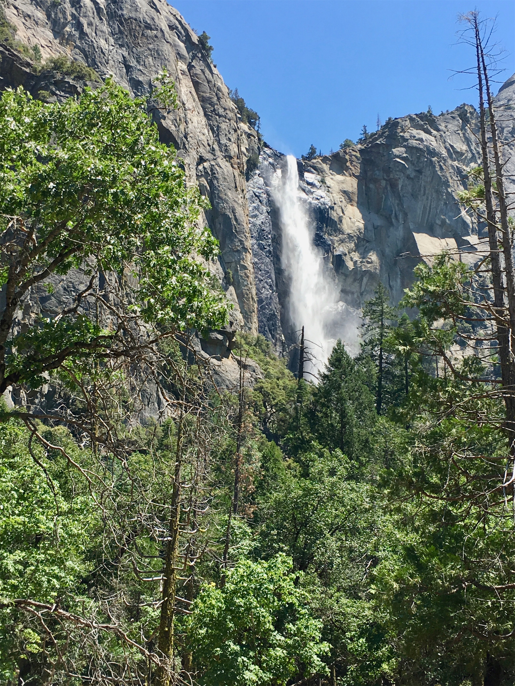

Monday, Jun 25, 2018, 3:35 PM PDT
Wawona Visitor Center, Fish Camp, CA, United States
90°F Sunny
90°F Sunny
![]()
6/25 Wuksachi Lodge, CA -> Big Trees Lodge, CA 146 mi, 5 hr
6/26 Big Trees Lodge, CA -> Yosemite Valley RT 57 mi, 9 hr
6/27 Big Trees Lodge, CA -> Mariposa Grove RT 10 mi, 2.5 hr
Trip Total: 4,861 mi
We left our lodge in the Sierra park and headed west out of the mountains back to the San Joaquin Valley, again passing every kind of produce imaginable (except for bananas, mangos, and pineapples, we later learned). We stopped at a fruit stand, and loaded up nectarines, peaches, and plums ($1.69/lb for a mixed bag) and pistachios just before hitting Fresno, and then headed north back up into the mountains. This time though, our destination was the southern Yosemite entrance.
Yosemite is the Mother of All National Parks. Although it’s third on the list for annual visitors, 99% of them head for 1% of the park, the Yosemite Valley, making it unbelievably congested. But the reason it is so popular is that it appeals to every kind of visitor, from world-class rock climbers to hikers to photographers to flora and fauna lovers. And, it is exquisitely beautiful. We read warnings about 2-3 hour waits to get into the park, about all parking being full at 9 AM (they have 5,400 parking spots), and were told that if we did get a spot to never leave it and do everything by shuttle or bus tour. The first issue we encountered was a delay for pine tree removal operations, a result of last year’s devastating wildfires, just before the park entrance. Once we hit the gate, we only waited a few minutes and a ranger saw that we had a pass so told us to just go through the employee entrance.
Although we booked a year in advance, there wasn’t a single hotel room available in the Valley, but we were able to get a room at the Victorian-style Big Trees Lodge, built in 1879, just inside the park’s southern entrance. It has no TV or air conditioning, and limited WiFi in a sunroom area, be we did get a room with it’s own bathroom! That disappointment turned out to be a blessing because it was a tranquil respite from the Valley commotion.
The next day we ate breakfast as soon as it opened and then dashed to the Valley, 45-min north, to beat the crowds. Turning the corner and seeing a 3,000 ft high mountain of vertical granite (El Capitan) was one of the most striking experiences he have ever had. We were rewarded with a parking spot. We walked around the Valley a bit to orient ourselves, and came to see what all the fuss it about. The scenery is amazing everywhere you look. It has it all: mountains, trees, wildflowers, rocks, and waterfalls. We had pre-booked a 4-hour bus tour taking us to Glacier Point, the famous and stunning overlook spot of the valley below (which is also notorious for being closed due to limited parking). The 40-year veteran driver/tour guide made this a valuable and interesting learning experience. We especially appreciated the frequent stops and recommendations for the best picture taking places. We finished the day at the visitor center, museum, bookstore, and Ansel Adams photography gallery and headed back to the quiet of our lodge, happy that we managed to see what we wanted to, while minimizing the congestion issues.
The next morning we headed to the famous Mariposa Grove of Giant Sequoias, right near our lodge. It had been closed for 3 years for a $43 million renovation (the largest in National Park history), and it just reopened 2 weeks ago! They did a spectacular job. All parking was moved away from the trees and they have a shuttle bus system from the lot to the grove. We took a 1.6 mile hike through this state-of-the-art in park design to see the biggest Sequoia there, 1,800-year old Grizzly Giant (25th largest tree in the world), one of about 500 in the grove. It is noticeably leaning (17 degrees), usually a precursor it a fall, but engineers think it has compensated for it and it isn’t going anywhere soon.

